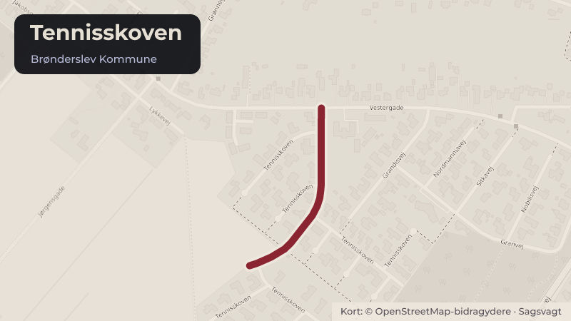

Besluttet 21. oktober, Økonomiudvalget, Brønderslev
Udvidelse af boligområde ved Tennisskoven i Hjallerup
Sagsforløb: TU/ØK Økonomiudvalget besluttede på møde den 27. august 2025 at iværksætte udarbejdelsen af et plangrundlag med henblik på etablering af yderligere syv boliggrunde ved den ene stikvej ved Tennisskoven i Hjallerup.
Bydele i sagen: Hjallerup
Steder i sagen: Tennisskoven

Kort fortalt
- Hvem
- Økonomiudvalget, Brønderslev Kommune
- Hvornår
- Onsdag 21. oktober 2026
- Status
- Besluttet. Teknisk Udvalgs indstilling godkendt.
Læs hele sagen Kommunens egen tekst
Sagsfremstilling
Økonomiudvalget behandlede på møde den 27. august 2025 en initiativsag fremsat af
Borgmesteren vedrørende etablering af yderligere boliggrunde ved Tennisskoven i Hjallerup.
Økonomiudvalget besluttede i den forbindelse at igangsætte udarbejdelsen af et tillæg til den
gældende lokalplan samt et tilhørende kommuneplantillæg, som skulle muliggøre etablering af
syv ekstra boliggrunde ved enden af den sydøstlige stikvej ved Tennisskoven. De syv
boliggrunde var planlagt på kommunalt ejet areal.
Fagforvaltningen for Klima, Teknik og Kultur konstaterede under forberedelsen af planarbejdet,
at det areal, hvor udvidelsen var planlagt, er et § 3-beskyttet naturområde. En nærmere
undersøgelse bekræftede, at området er et overdrev omfattet af naturbeskyttelseslovens § 3.
Konsekvensen er, at den påtænkte udvidelse med syv boliggrunde ikke kan gennemføres som
forudsat. Det beskyttede overdrev omfatter arealer svarende til fem af de planlagte
boliggrunde, hvilket betyder, at der alene vil kunne etableres to boliggrunde.
Fagforvaltningen bemærker, at lokalplanen stadig giver mulighed for etablering af yderligere 10
byggegrunde for enden af den nordvestlige stikvej. Arealet er dog ikke ejet af kommunen.
Som alternativ kan det undersøges, om det samlede kommunalt ejede areal ved Tennisskoven
kan disponeres anderledes med henblik på etablering af yderligere byggegrunde samtidig med
en omlægning af områdets eksisterende fælles opholdsarealer.
Fagforvaltningen bemærker, at der ved tidligere drøftelser af områdets fremtidige disponering
er fremført lokale indsigelser mod at reducere eller ændre de grønne rekreative områder. I
forbindelse med etableringen af Tennisskoven blev der udlagt konkrete fælles friarealer, som
anvendes af områdets beboere i dag. På den baggrund kan fagforvaltningen ikke anbefale, at
der arbejdes videre med denne mulighed.
Personalemæssige konsekvenser
Ingen.
Tidligere beslutning
Økonomiudvalget besluttede den 27. august 2025, punkt 8:
Der iværksættes at udarbejde et tillæg til lokalplanen, således de grunde der ligger på det
kommunale jord – kaldet Tennisskoven Sydøst – bliver medtaget i lokalplanen. Lokalplanen
behandles i den rækkefølge, den kommer ind til.
Indstilling
Fagforvaltningen for Klima, Teknik og Kultur indstiller, at Økonomiudvalget:
1. tager orienteringen om registreringen af et § 3-beskyttet overdrev inden for det
planlagte udvidelsesområde ved Tennisskoven til efterretning.
2. beslutter, at arbejdet med tillæg til lokalplan og kommuneplantillæg for de syv
planlagte boliggrunde ved Tennisskoven afsluttes.
3. beslutter, om der skal arbejdes videre med etablering af byggegrunde på det areal,
der er omfattet af lokalplanen, men ikke ejet af kommunen, eller
4. beslutter, om fagforvaltningen skal arbejde med alternative placeringer af
byggegrunde inden for det kommunalt ejede areal ved Tennisskoven.
Beslutning fra Teknisk Udvalg, den 5. oktober 2026, punkt 3:
Punkt 1: Orienteringen indstilles taget til efterretning.
Punkt 2: Indstilles godkendt.
Punkt 3: Indstilles godkendt, men området afventer revision af Masterplanen for Hjallerup
og den efterfølgende kommuneplan.
Punkt 4: Indstilles ikke godkendt.
Beslutning
Teknisk Udvalgs indstilling godkendt.
Kilde: Brønderslev Kommune, Økonomiudvalget, referat fra mødet onsdag 21. oktober 2026, punkt 7. Læs den originale sag hos kommunen.